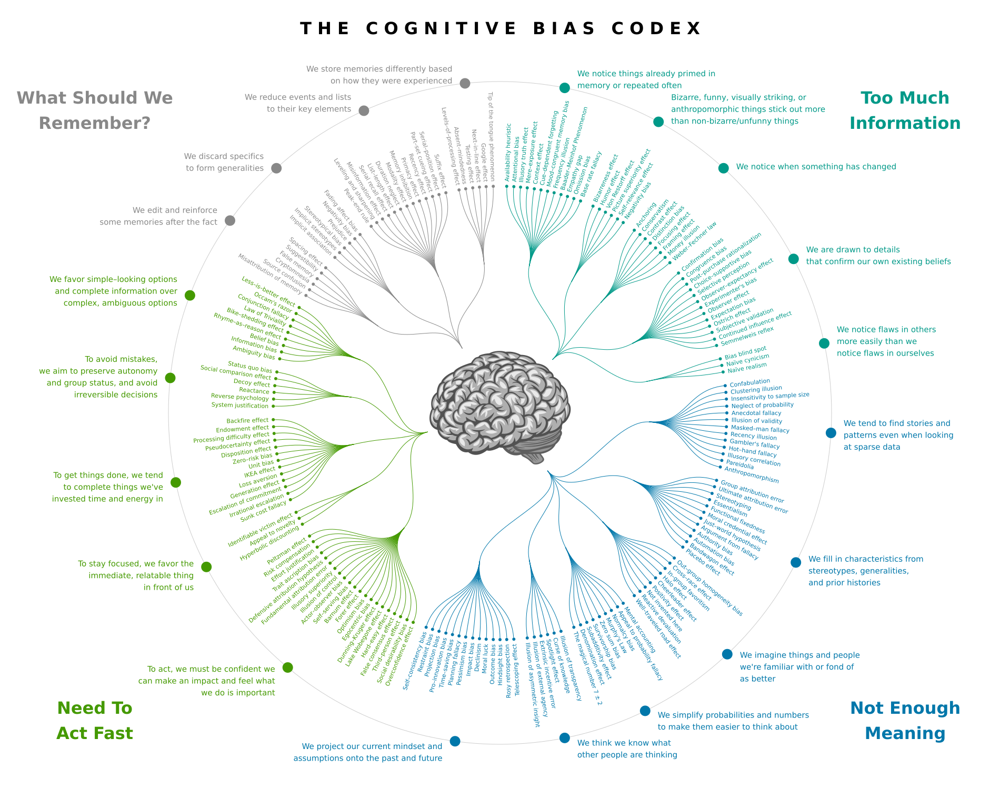
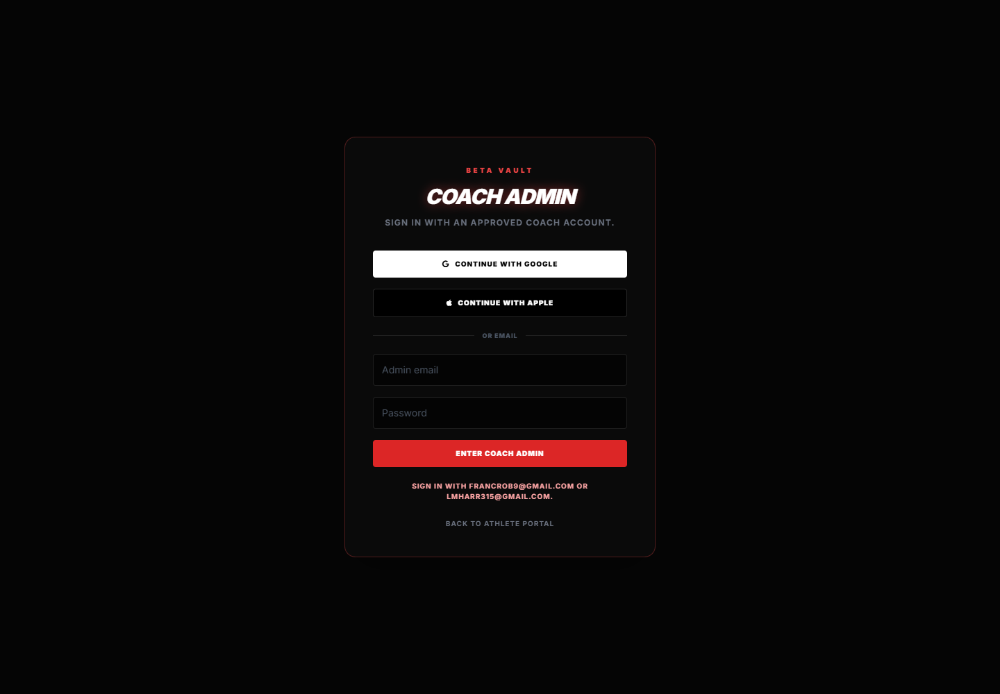
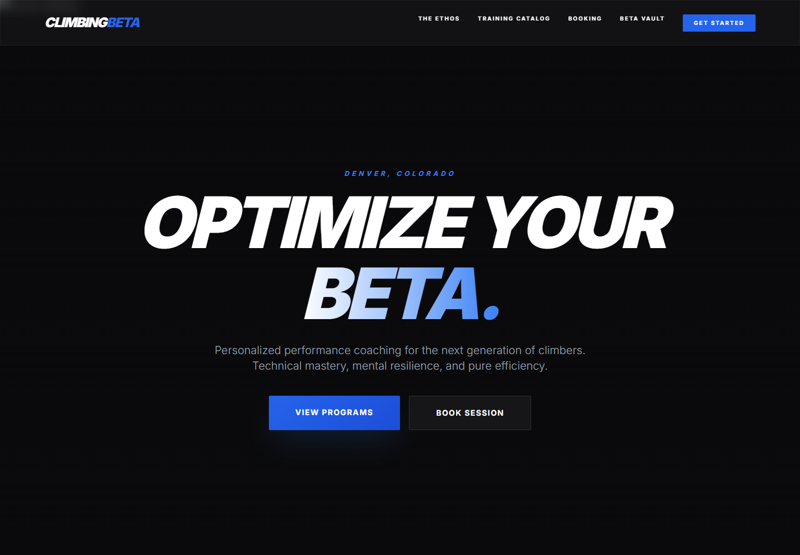
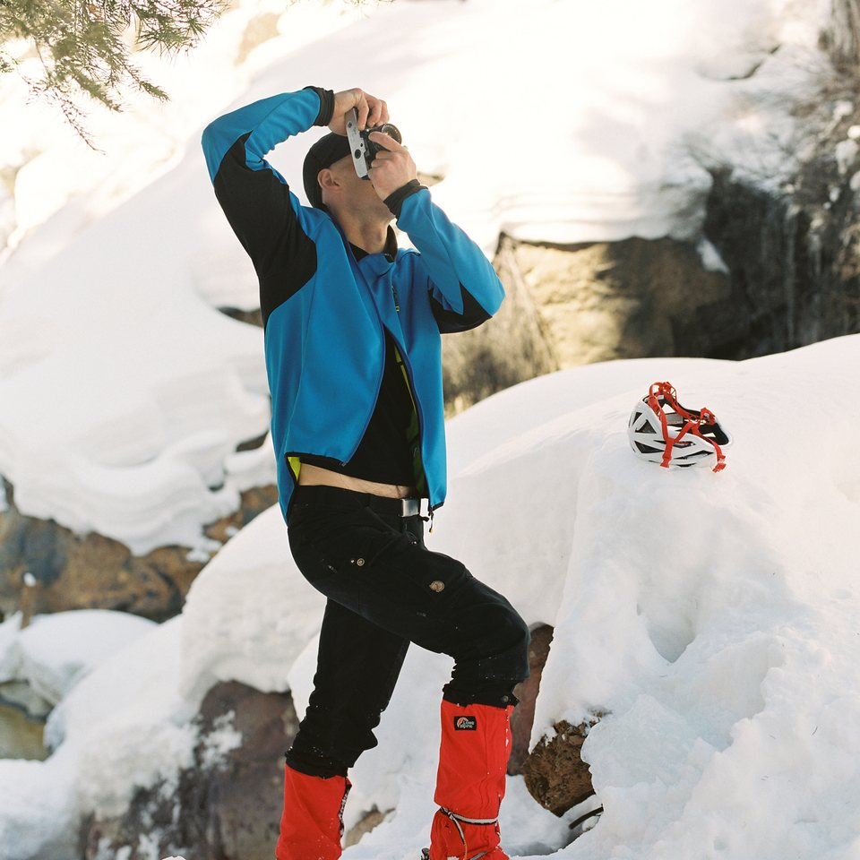
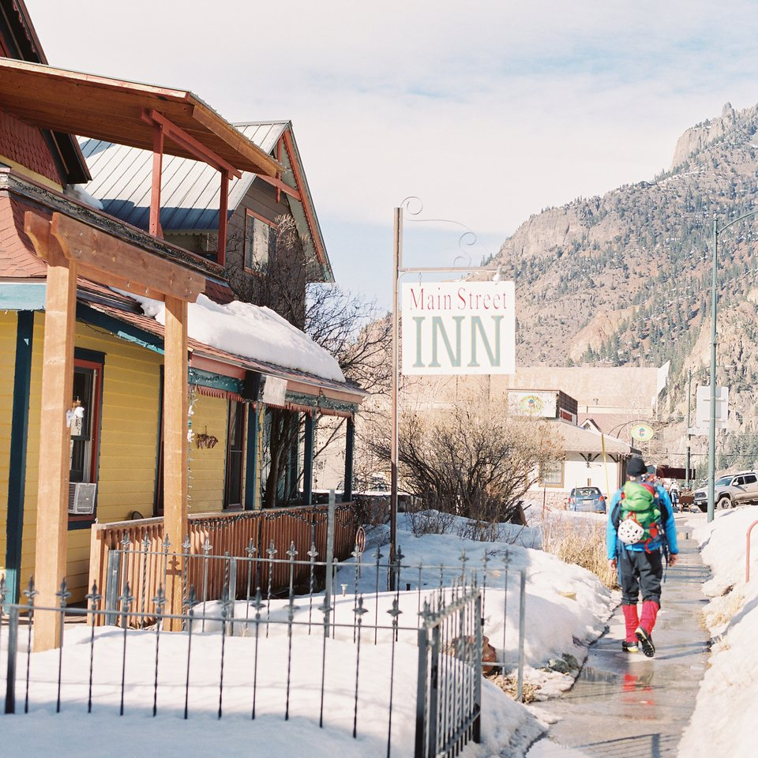
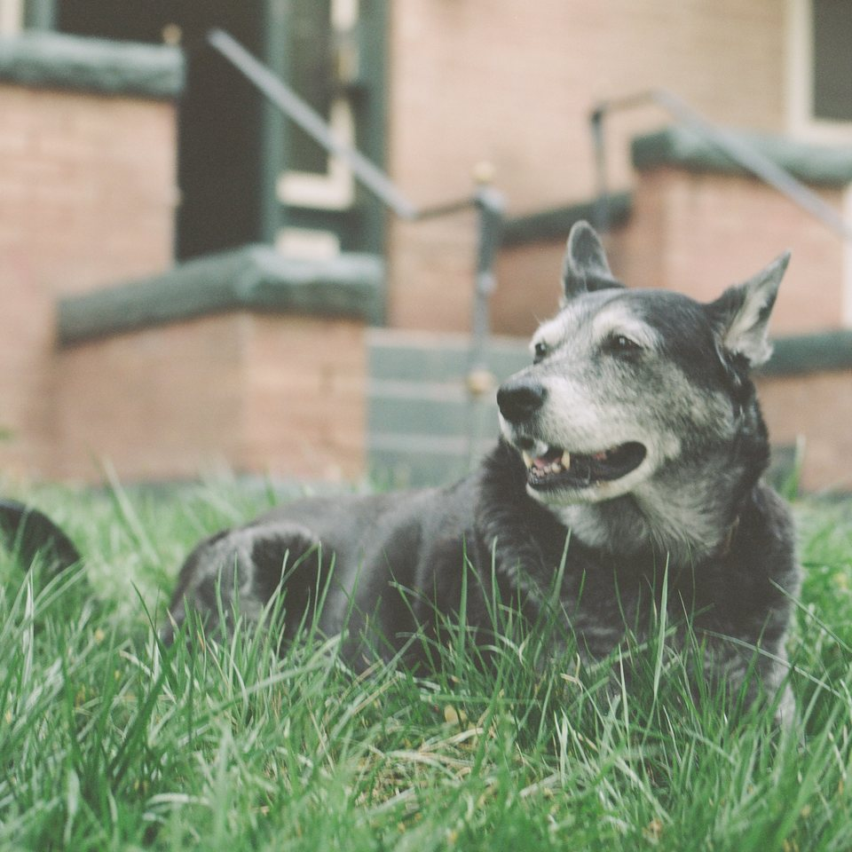
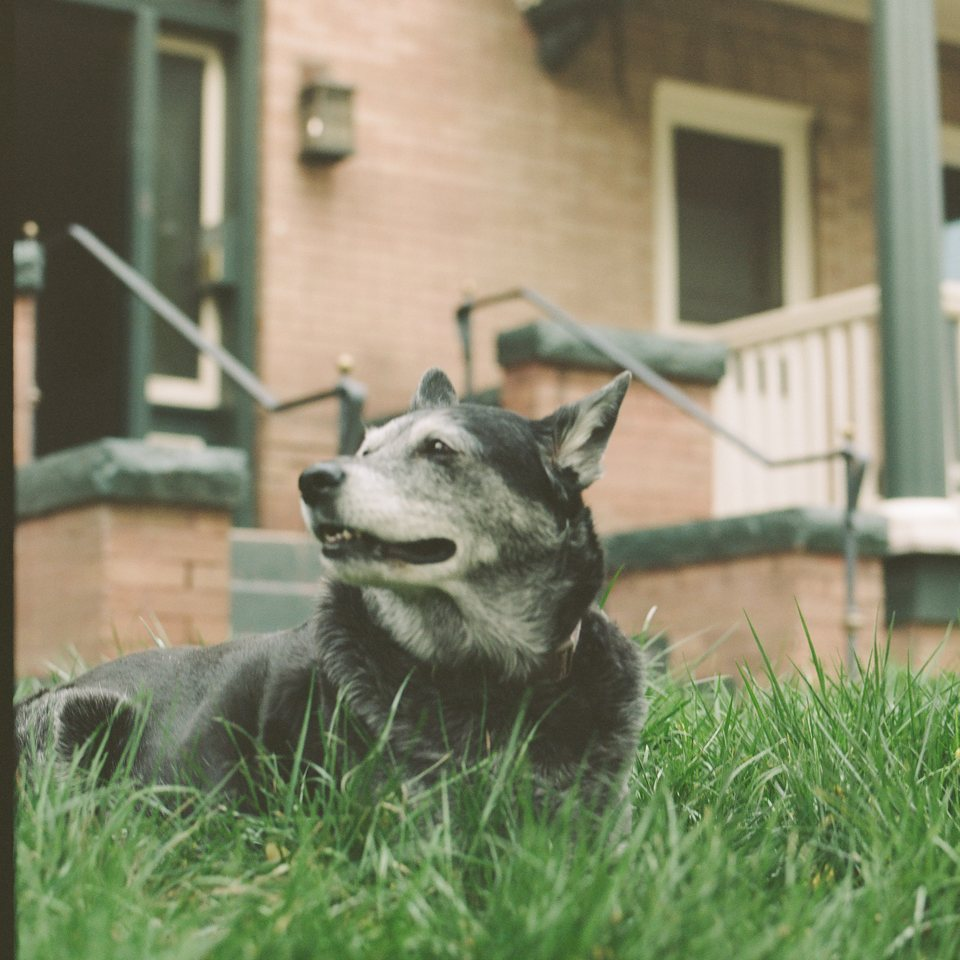
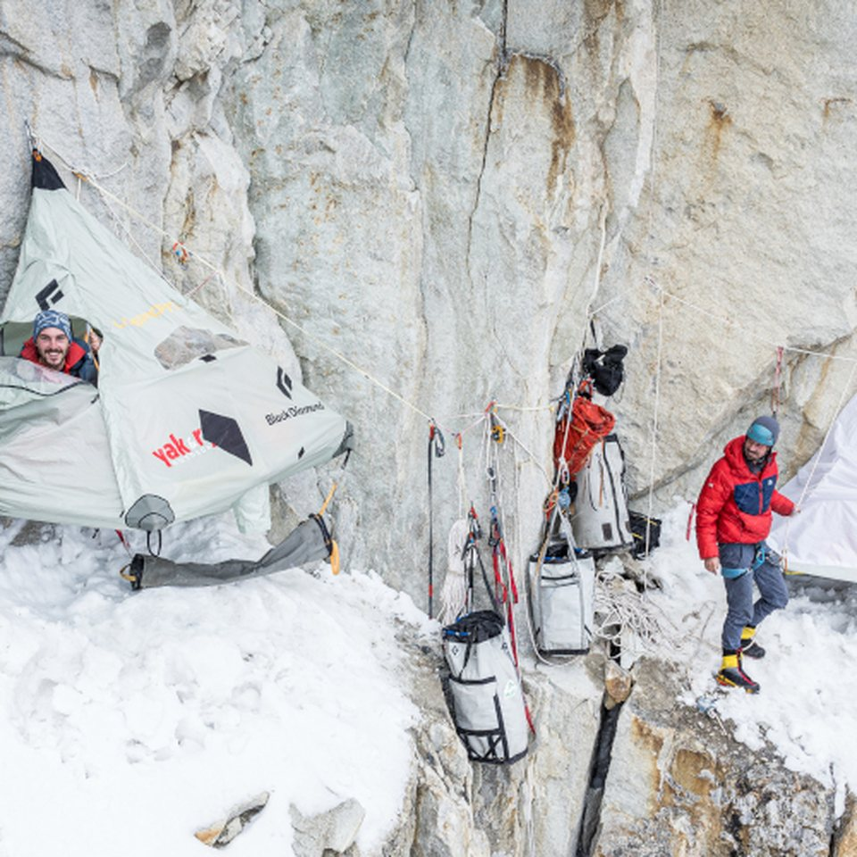
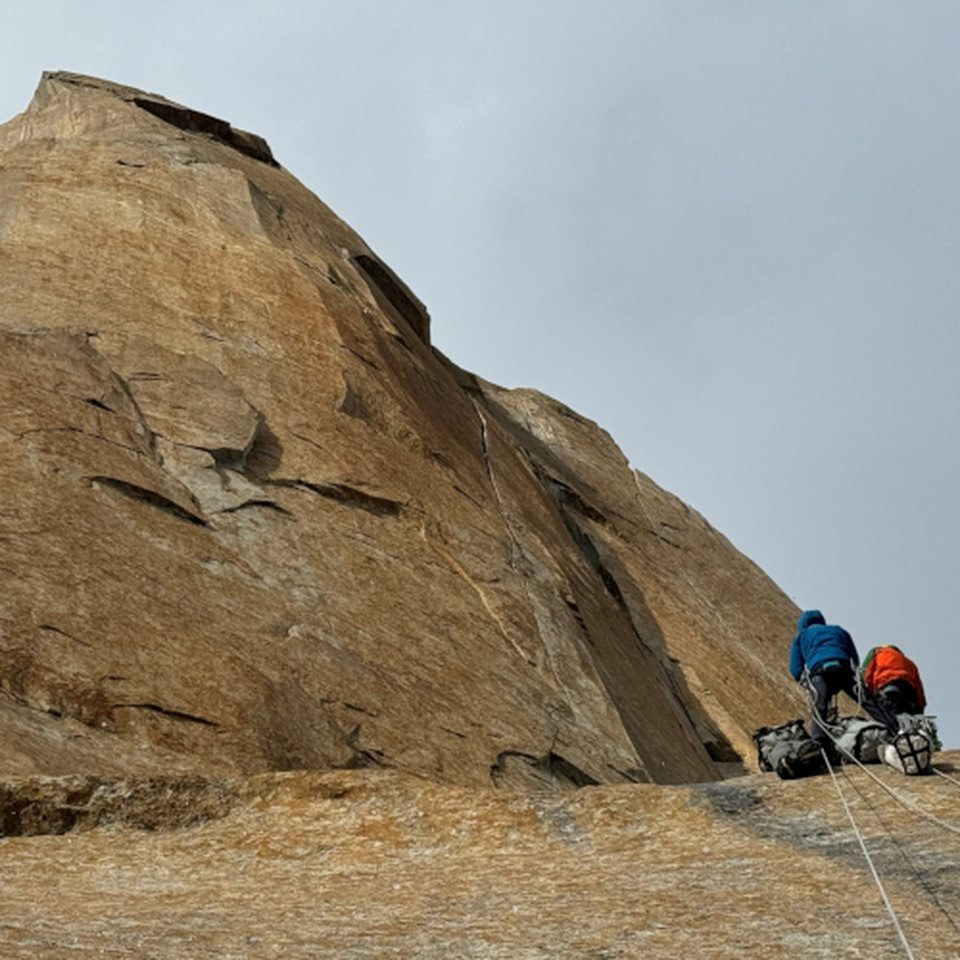

Beta Vault
Athlete performance application with Apple sign-in, structured training logs, goals, video notes, coach recommendations, and a companion admin command center.
Operations leader + systems builder
Dashboards, workflows, intake tools, client portals, and internal apps that help people do the work without fighting the system around it.
I build internal tools for the places where work usually breaks: intake, reporting, handoffs, approvals, customer journeys, and the spreadsheets nobody trusts but everyone depends on.
My background is operations-heavy, so I care less about novelty and more about whether people can use the system on Monday morning.
Executive priorities only matter when they survive contact with daily work. I help translate board-level goals into intake paths, approval queues, dashboards, evidence logs, and reports that staff can actually maintain.
Athlete performance application with Apple sign-in, structured training logs, goals, video notes, coach recommendations, and a companion admin command center.
Live hotel rate-integrity workbench that compares direct and OTA offers, preserves evidence, and turns parity gaps into a prioritized revenue-management workflow.
Scenario planning surface for technology initiatives: place SSO, device refresh, network upgrades, reporting, data warehouse, and adoption work onto a sample timeline to see schedule, cost, risk, and equipment impacts.

Interactive version of the Cognitive Bias Codex with plain-English search, zoomable map navigation, bias explanations, and a conceptual brain-network overlay for visual exploration.

Administrative layer for athlete roster management, invites, video review queues, goal tracking, and approved coaching recommendations.

Retrospective application layer for Futures LLC: a secure, cloud-hosted Digital Ramp for vocational independence, self-sovereign identity, verifiable career credentials, and blockchain-backed achievement records inside a complex healthcare and HIPAA-compliance environment.
The work centers on hardwiring security, compliance, and portability into the user-facing experience: static cloud delivery, trust-center navigation, business-plan documentation, a student wallet concept, and a small credential ledger prototype.
Downloaded and organized a larger template-based website for local customization, review, and future publishing back to the original bucket.

Coaching website connected to the Beta Vault product experience, positioning the app as part of a larger customer acquisition and service delivery system.

Executive grant operations console with Prism-style data feeds, milestone variance, board strategic imperatives, budget tracking, digital approvals, and audit-ready evidence logs.

Playable change simulation with Adoption Translator: load old software screenshots, identify adoption risk, compare target platforms, and generate future-state workflow mockups before rollout.

Oracle-style procurement command center with AI risk intelligence, one-party hosted supplier workrooms, live comments, restricted upload handling, e-sign verification, requisitions, purchase orders, sourcing, contracts, and qualification controls.

Plumbing company operations dashboard for residential and commercial calls, emergency triage, technician routing, job sequencing, quote status, service categories, and booked revenue.

Photo and video delivery prototype for creative teams: local asset ingest, image-only gallery mode, review states, hosted client package links, and downloadable deployment manifests.
I build IT systems from real operating knowledge: finance, HR, operations, vendor platforms, security controls, and regulated workflows. The value is knowing what should be automated, which controls need to hold, what leadership needs to see, and how to make the system usable enough to become part of daily work.






Describe the workflow, audience, or problem in plain language. The brief builder will suggest a useful first step and draft a short note you can edit.